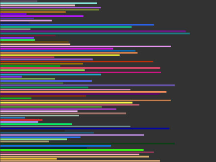
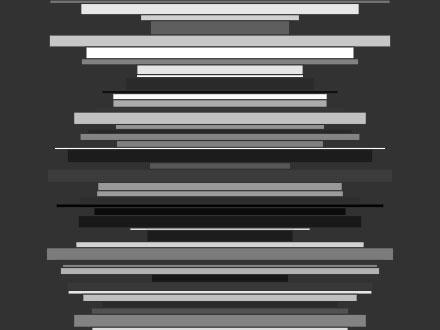
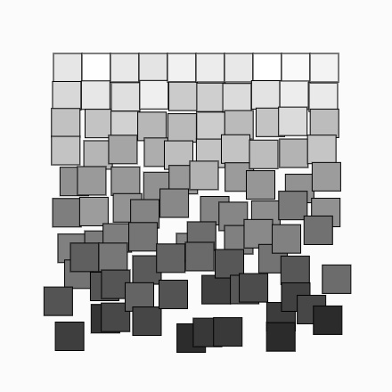
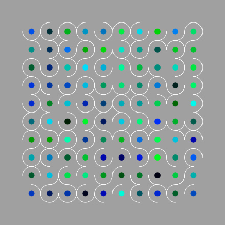

Loops en random
In deze opdrachten ga je met loops en random waarden werken in de p5 editor. Geef elke opdracht een naam en bewaar ze. Tip: zet je frameRate op bijv. 1 om elke seconde een nieuwe compositie te genereren.
Opdrachten
-
Maak een loop om een aantal rechthoeken van variabele breedte en dezelfde hoogte te tekenen zoals in dit voorbeeld. Bedenk eerst welk type loop hiervoor geschikt is. Verder gebruik je random waarden voor de vulkleur. Dit kan met 6 regels code in de
drawfunctie.
- Regels:
- Rechthoeken hebben verschillende breedte maar raken niet de rechterkant van je canvas.
- Rechthoeken hebben dezelfde hoogte.
- De vulkleur variëert.
-
Maak een loop om een aantal rechthoeken van variabele breedte en hoogte te tekenen zoals in dit voorbeeld. Bedenk weer goed welk type loop hiervoor geschikt is en zorg dat je niet teveel rechthoeken tekent. Je gebruikt een random waarde voor de grijstint van elke rechthoek. Dit kan met 9 regels code in de
drawfunctie.
- Regels:
- Rechthoeken hebben verschillende breedte maar raken niet de zijkanten van je canvas.
- Rechthoeken hebben verschillende hoogte.
- Teken precies genoeg rechthoeken zodat ze in de hoogte van je canvas passen.
- De grijstint variëert.
-
Maak een geneste loop om een raster van vierkanten te tekenen zoals in dit voorbeeld. Zorg ervoor dat de vierkantjes naar beneden toe steeds willekeuriger gepositioneerd worden en steeds donkerder worden. Gebruik hierbij ook nog wat random variatie. Dit kan met 9 regels code in de
drawfunctie.
- Regels:
- De x- en y-positie van elk vierkant variëert steeds meer van boven naar beneden.
- De grijstint van de vierkanten wordt steeds donkerder van boven naar beneden.
- De grijstint van de vierkanten variëert ook horizontaal een beetje.
- Extra
Maak een geneste loop om een raster van cirkels en cirkelsegmenten te tekenen zoals in dit voorbeeld. Je gebruikt random waarden voor de vulkleur van elke cirkel en de lengte van elk cirkelsegment. Dit kan met 15 regels code in de
drawfunctie.
- Regels:
- Cirkels hebben een willekeurige vulkleur, maar er zit geen rood in - óf geen groen, óf geen blauw.
- Teken met
arc()cirkelsegmenten van een kwart, een halve of driekwart cirkel. - Optioneel: variëer de diameter van de cirkels, teken extra cirkels en/of cirkelsegmenten op elke positie.
Inleveren
Voor elke opdracht selecteer je Share in het File menu van de webeditor. Kies Edit en deel de link met je docent.